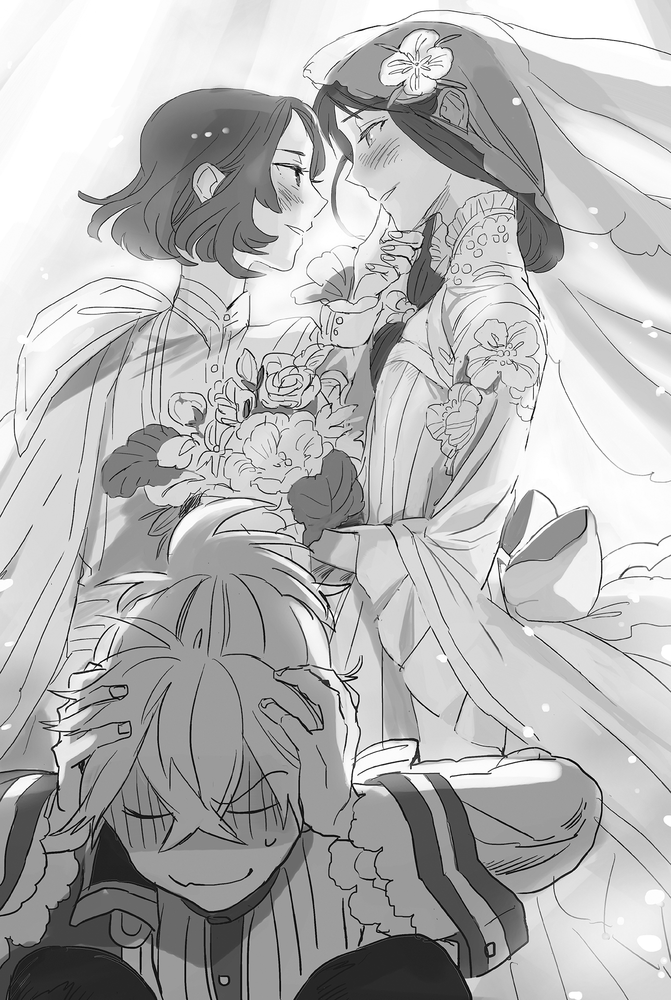

Chapter 4 – The End of Darkness
Part 1
A storm of lavish praise and congratulations was waiting for the combined fleet that returned home to Majorca Kingdom.
It couldn’t be helped.
Sanpaniradeon were the pirates among pirates that rampaged around the sea and turned three countries into their enemies.
Not only did the combined fleet crush them, but Sanpaniradeon even surrendered and accepted being a subordinate. It was an event that was like a heroic tale to be sung by the minstrels.
Furthermore, the main actor of this event was Tormenta Negra, who was greatly famous even among the commoners. It was only natural for the people to be boiled up in excitement.
Maria imagined that her beloved cousin would surely return with a triumphant grin on her face, but she immediately noticed that her cousin was acting strange.
Urraca was waving her hand back at the people who welcomed her home, but her heart obviously wasn’t in it. Her gaze was wandering around in search of someone.
──And then she noticed that the target of her gaze was Baldr.
She continued to stare at Baldr in a daze while her cheeks were flushed with a rosy color. And then before long, she would look like she suddenly came back to herself and went bright red up until her neck. After that, she remove her gaze from Baldr in a large manner that would also make her body face another direction.
Maria was staring at such Urraca with great amusement.
「I can only root for her like this!」
She didn’t know what kind of change of heart Urraca had gone through, but there was no doubt that the season of love had finally come for her.
.
Part 2
The celebration had fresh seafood and fruits lined up in abundance.
The main star of the celebration was obviously Urraca.
Normally Urraca would be proactive in this kind of party and get a bit wild, but today she was only giving everyone a business smile that lacked her usual liveliness.
Even so, it made her allure as a woman rise by several levels, so the audiences were delighted to watch or interact with her.
Maria was congratulating the growth of her younger sister from the bottom of her heart.
「Ufufu……you seems to be bored, Urraca.」
「T-that ain’t true at all, Maria-nee.」
Urraca turned toward the cousin who she couldn’t go against and waved her hand. Her behavior looked suspicious.
The organizer of the party would lose face if the star of the party was looking bored.
Even Urraca knew that much.
「Then that’s good but……here, I brought you your favorite pineapple ale.」
「T-thank you!」
It seemed Urraca was finally freed from her nervousness when she saw her favorite drink. Urraca gulped and began to drink the chilled fruit ale in one go.
「Sorry that the glass is Baldr-kun’s old glass though.」
*Bufuuuuuuuuuh!*
「Oh dear, that’s nasty.」
「Gehoh! Gofuh! Ma-Maria-nee, what just now, what did you……!?」
「I was just congratulating you for for your first indirect kiss with Baldr-kun, you know?」
「Huh, huh, huuuuuh!」
Urraca spat out her pineapple ale from shock. Then Maria’s words after that made her shout, also causing her entire body to turn red.
Seeing how her cousin lost her composure so completely like this reminded Maria of her black history, those times when she caught a snake or a crab to bully Urraca when she was little.
(This child……come to think of it, it was really fun to bully her when she was little……)
Urraca had grown up and she was also blessed with genius talent, so no one remembered, but she was a girl who was really easy to instigate and her personality was really amusing when she was teased.
「I’m really curiouuus……the reason how Urraca can become a cute maiden like this, I’m really, really curiouuus……」
「Maria-nee, your true color, your true color is showing!」
Urraca felt a chill on her skin seeing the dark smile that Maria sported. At the same time, she admonished Maria who was a queen of a country right now.
「Ah, no good……as thanks, I’ll teach Urraca the ace up my sleeve later.」
「It doesn’t seem like it will be anything good so I’ll pass.」
Most times it wouldn’t become anything good when Maria showed that kind of expression.
Urraca had learned that by heart since she was a child.
「Sheesh, is it really okay? Even though it’s my sure kill trump card that allowed me to win his majesty Carlos’s heart……」
「──What did you say?」
Maria and Carlos were greatly in love with each other, and in the end, they were happily married. Even Urraca had heard about that story so many times she got fed up with it.
If her memory was correct, it was King Carlos who proposed marriage to Maria at that time…….
On that subject, a memory of the past revived inside her mind. There was one time when her grandfather said that he got caught in her grandmother’s sure-kill technique.
Urraca unconsciously gulped.
「……Do you want to know?」
Urraca’s head nodded up and down wordlessly. It was like she was being entranced by the devil.
「Come to my room later. I’ll teach you everything there is to know about this secret sure-kill technique that mustn’t get leaked to outsiders.」
Maria’s eyes narrowed in delight and she showed a brilliant smile.
Urraca finally reobtained her courage from Maria’s words. She finally recovered her liveliness to enjoy the party. Originally, she was also someone who loved this kind of party too.
「Oi, Kailas! Come over here and pour me some drink. Just so you know, I still haven’t lost against you!」
「Sheesh, you really don’t know when to give up.」
「The nerve! I’ll make you dance naked when you lose against me in a race!」
The party heated up even more when Urraca came back to being her energetic self.
Even though she was a maiden who froze up when facing the man who was her first love, she had a type of charisma that only appeared once every hundred years.
「She is really cute……so simple and gullible.」
If she could see the wicked smile that Maria sported at that time, Urraca would surely regret her choice.
Maria’s mischief would end in nothing good most of the time, however no matter how much she raised her guard, Urraca would still get cajoled before she realized it and end up going through unpleasant experiences. She had experienced it many times in the past.
Urraca gulped down alcohol in a good mood. She still couldn’t even imagine what tragedy was waiting for her in the future.
「Ufufu……the sure-kill technique to catch a man, that is by making a fait accompli. There is no other way than that! If only I can show her……Carlos’s pale face when he woke up in the morning at that time!」
Urraca’s body shivered at that time from the cold chill that she felt. However she didn’t understand the cause of it.
For some reason Urraca’s animal instinct could never work at all when it came to Maria.
「Come on drink, drinkkkkk!」
The local elders who had known the two since they were children let out a long sigh. They lamented the misfortune that would befall Urraca after this.
Judging from the expression on Maria’s face, there was no doubt that she had just gotten an idea for an exceptionally malicious game.
Although, they didn’t have the guts to warn Urraca about it and turn Maria into their enemy.
.
Part 3
Baldr slipped out from the party and reached the bed that was prepared for him when around midnight.
「Ugee……I don’t feel good……」
It wasn’t like he was weak against alcohol, or rather, he liked drinking, but it was a party that was attended by big shots. That meant he couldn’t really let loose and get pleasantly drunk in such a setting.
In order to cool down his flushed body, he opened the double windows that were facing the sea. The refreshing sea breeze pleasantly caressed Baldr’s silver hair.
「The wind is nice……」
The southern country Majorca was hotter and more humid than Mauricia, but the temperature difference between noon and night was large. He felt like the night here felt more chilly than Mauricia instead.
It was then, *knock knock* he heard the sound of the room’s door getting knocked hesitantly.
「Come in……?」
Now then, who could be coming here this late?
He left behind Teresa and Brooks at Sanjuan, so there shouldn’t be any friends of Baldr here in Majorca.
「B-Baldr, you’re still awake?」
「Eeee? Urraca-dono!?」
The one who appeared was Urraca, wearing fascinating night clothes that dazzled his eyes.
It was an adult’s black night clothes. Her huge breasts that couldn’t be fully hidden by the clothes jiggled and displayed the deep valley between them.
That overly provocative figure made Baldr back away with a blushing face. There was no doubt that Urraca was drunk right now.
「Wh-wha, what’s with that appearance! At the middle of night like this!」
「……? It’s because it’s night, so it’s natural to wear a night clothes isn’t it?」
「This person is no good! She is a child who grew into a still childish adultttttt!」
It seemed she was seriously not seeing Baldr’s point and only tilted her head cutely. Baldr seriously considered running away from here.
He didn’t have the confidence to properly talk and convince Urraca.
「Muu? I’m not a child! Look! Even my breasts are several times bigger than Maria!」
If Maria heard that line, she would beat Urraca until she was half dead. Urraca puffed out her splendid chest to show them off.
The devilish breasts that rivaled even Rorona made Baldr unable to stop himself from gulping unconsciously.
「A-anyway, an unmarried woman shouldn’t visit a man’s room in the middle of the night like this. If you have business with me, I shall come to you to enquire about it tomorrow, so……」
「W-wait!」
Urraca hugged Baldr’s right arm swiftly.
Baldr’s heart shouted with exultation at the plum and soft feeling that was pressed around his right elbow.
Unfortunately this softness wasn’t something that he could experience from Selina, and of course not from Seyruun.
「That’s……i-it might be too late to say this but……thank you for saving me the other day!」
Urraca wrung out those words from her mouth while her forehead bumped on Baldr’s right arm. He wasn’t so heartless that he could push her away in this situation.
Baldr sighed in amazement while hugging Urraca’s shoulders like he was interacting with an adorable little sister.
「I’m happy that I could be useful for Urraca-dono.」
Urraca pinched Baldr’s arm painfully. She might be offended by those words.
「Stop calling me Urraca-dono! Just call me Urraca!」
「As expected, I can’t bring myself to call a countess and the navy minister so informally……」
「I told you it’s alright! I’m not going to let go if you don’t listen!」
(How childish this person is!?)
Baldr had her breasts pressed even harder on his arm. He immediately got outlasted by the opponent’s persistence and yielded.
「Got it. I understand, Urraca. That’s why please, let me go.」
It felt really good, but there was a time when a boy shouldn’t feel good!
Then Urraca closed her eyes as though she was ruminating something before she leaped at Baldr’s chest.
And then she turned her gaze upward toward him with moist eyes, but unfortunately Urrca was taller, so her posture looked a bit too forced.
「You were very cool at that time, Baldr. It was the first time since I was born to have my heart stolen by a man other than my Ojii-sama.」
Eh……could it be, this flow of events……?
「──M-make love to me! I love you!」
It was a straightforward confession from such a stunning beauty. There was no man alive who wouldn’t be shaken by this.
However, his danger sensing level that had reached an instinctual level just barely managed to make him desist from embracing Urraca.
Even so, the sweet smell of coconut was drifting from Urraca’s black hair. Her sensual thighs were stimulating Baldr’s lower body. They drove his rational mind mad.
(Dangerous! It will be really bad if this continues!)
If he allowed Urraca to continue persuading him with her body language, Baldr might get swallowed by the temptation.
「T-this one isn’t working? If this is no good then next is, err~……you can do anything you want with my body! I don’t mind even if it’s just one night, make me into your woman!」
She was really a hopeless girl, which made her even more adorable.
From those words, Baldr accurately discerned who it was that put the idea of doing this into Urraca’s head.
There was no doubt that little devil was imagining Urraca’s silliness in joy around this time.
He wondered how such a mother could give birth to an honest and lovable young boy like Pedro.
.
Seeing that Baldr wasn’t really reacting like she hoped for, Urraca started to spout even more suggestive lines.
From the tone of her voice, it seemed she herself didn’t understand the meaning of what she was saying.
「Since a while ago……the inside of belly feels really hot! Please free me from this aching!」
「That line is a bit, you know……」
She was undoubtedly a beauty, but how should he say it, her aura was decisively lacking.
「Use your xxxxx to stir up my xxxxxx into a mess!」
「That damn auntie, just what is she making Urraca saying!」
Baldr reflexively averted his gaze from those lines that would make other people who heard them undoubtedly misunderstand her as a female molester. He also felt indignation rising inside him.
It was a secret that his lower body was reacting slightly.
「Fill my xxxxx with your xxxxx!」
「You’re getting even worse!?」
(To make this naïve Urraca going this far with her lines, Queen Maria, you’re a real demon!)
「──Marry me to take the responsibility of impregnating me!」
「I haven’t impregnated you, also, that’s what you’re actually aiming for in the end, huh?! Damn it!」
At this time, Baldr’s eyes could clearly see the form of the graveyard of men.
The two’s station would make it politically difficult for the two of them to be with each other, but if there was a fait accompli, Baldr definitely had to take responsibility.
Maria’s plan was effective in that regard. If they set aside the form of the method taken that is.
「Put your sticky xxxx into my gaping open xxxxx……」
「Why are you returning back to that again!?」
.
(Why?)
The 『lines with exceptional effect for taking down men』 that she heard from Maria weren’t showing any effect toward Baldr.
No, at first they were really effective. His lower body was also reacting (it seemed it was found out).
Now that it came to this, although she didn’t want to use it, she could only appeal to him using her last method.
「──Prepare yourself, Baldr. I don’t care anymore what method I use in order to have your child!」
「No, you should care about that! The child will be really pitiful if you don’t!」
「It doesn’t matter what kind of child will be born, I’m confident I’ll be able to love them if it’s your child!」
Urraca never showed any reaction in that kind of thing except towards her grandfather. This was her only chance to be pregnant with a child.
Even if she searched throughout the young men of marriageable age all over the world, there was no way she would find any other man who had the heart of an old general in their heart like Sanai.
「That’s why sorry. If you sniff this specialty secret medicine of Parma, you’ll fall asleep right away. Don’t worry, everything will be over when you wake up…………guu」
*Bum*, Urraca fell on the bed head first.
It seemed she made a mistake and inhaled the sleeping drug herself.
「This woman is completely disappointing to the end……」
‘Kuu kuu’ Urraca slept with an innocent face. It was impossible to imagine the numerous bouts of silliness that she displayed just now when looking at her face right now.
「Well, she was just instigated by her majesty Maria though.」
Even so, some people said that the stupider a girl was, the cuter she would be, and indeed, he believed it would be really difficult to find any other woman as cute as Urraca.
Though that cuteness was reserved only for the position of little sister or buddy position at best.
Baldr stared at Urraca’s tranquil sleeping face while realizing that he was also getting sleepy.
(No good……but, well it’s fine I guess. Urraca will surely return to her senses when the morning comes.)
Just in case, he made Urraca sniff the secret medicine once more. Then Baldr himself also couldn’t resist the sleepiness anymore and his consciousness was swallowed into darkness.
.
Part 4
When Urraca woke up in the morning, there was Baldr’s face that was illuminated by the morning sun in front of her eyes. The memory of her silliness from the previous night was welling up vividly inside her mind.
「K~~~YAAAAAAAAAAAAAA!」
And then she hid her reddening face with both her hands and rushed out from Baldr’s room in full speed.
Baldr smiled wryly at her reaction that was exactly like he expected. Even so his mouth broke into a smile at Urraca’s innocent reaction.
「I sa~~~w it!」
──Only until the voice of an adorable demon came out though.
His gaze moved toward the direction of the voice with stiff motion like a rusty tin toy. There, Maria was standing with a triumphant smile.
「Yo……ur……majesty Maria……」
The freezing chill that he was feeling right now wasn’t at all inferior when he was faced with a fight against that mother .
Rather, this person felt even more wicked because he couldn’t think up any countermeasure.
「How naughtyyy……to share a bed together with an unmarried woman, this is a shocking scandaaal……!」
「What is the person who gave the sleeping drug to Urraca saying!」
Baldr realized his own blunder.
Most likely, everything was going just as this person planned, even this kind of result too.
「By the way……since when your majesty was watching?」
「Ufufufufu……perhaps from around the part when Baldr-kun called me auntie, I think?」
In other words she saw everything!
「How very regrettable. Just what is it that you’re dissatisfied about with Urraca?」
「There is nothing satisfying about almost getting reverse raped!」
「Even though getting through it somehow is where you show your worth as a maaan!」
「So is it okay if, for example, something like this had happened to King Carlos?」
Baldr didn’t overlook the blood vein that bulged on Maria’s forehead with a snap.
「──There is no way something like that can be forgiven. If that person lays his hand on a young girl while ignoring me, I’ll kill him before killing myself!」
「That’s just too horrible in various senses!」
Then what was going to happen to me, who had fiancées waiting for me back home?
Maria might have noticed the meaning of Baldr’s gaze and she scratched her head awkwardly with a wry smile.
「Ehehe~~. Well, I’ll have Urraca-chan polish her femininity up a bit more……」
A demon would be a demon no matter what.
Baldr was convinced of that when he saw Maria’s wicked face.
「I’ll record the image of Baldr-kun and Urraca-chan sleeping on the same bed……so you owe me for this okaay?」
It was vexing to obediently listen to her, but in the slightest chance such an image was shown to Selina or Seyruun, or even worse, if it was shown to Maggot, his life would be in danger.
Baldr’s shoulders slumped with his head hanging down. He could only surrender completely with a sorrowful expression.
「I’m begging you to please keep this a secret…………」
.
Part 5
The information about the successful subjugation of Sanpaniradeon also reached the Sanjuan Kingdom capital Cadiz quickly. A grand celebratory mood was fermenting among the people, especially the merchants.
However, there were also people who were unable to go along with that mood.
The second queen Elena should be said as the foremost example of those people.
「What are they so proud about after winning against mere pirates!」
What was displeasing for Elena was that she didn’t know how this subjugation of Sanpaniradeon was the condition for Majorca and the military to become Franco’s ally.
Although the number of people who knew about it was extremely limited. Not counting the king and Franco, there were only several other people who knew. Rather, it was only natural that Elena didn’t know.
Because of that, even a victory like this had a different meaning for her.
The military was considered as Pedro’s biggest backer up until now. In addition, Majorca Kingdom was his mother’s birthplace. Elena interpreted this as the Pedro faction accomplishing a great achievement with great publicity.
In fact, the interpretation of the general public was also the same as Elena’s.
The wind had been blowing against Franco since he announced his engagement with Teresa. In contrast, with this achievement it looked like the military that was Pedro’s backer was gaining influence rapidly.
It couldn’t be helped that Elena was having misgivings.
「At this rate……at this rate, that two-faced prince will be the king……!」
Elena bit at her lip until it was almost bleeding.
Maria was always making a demure face, but her true nature was that of a savage that was inferior even when compared to the dirty commoner.
How was Maria able to survive until now within the palace that was filled with intrigues and underhanded persecution plotted against her?
That was the effect of Maria’s strength as a capable magician, and her personality that skillfully paid back anyone who tormented her with twice the torment.
Even Elena, who was the very picture of arrogance, had only been making snide remarks towards Maria recently. That was because she was scared against Maria’s revenge if she got serious.
The most horrible thing was that time when Elena’s closest followers were completely annihilated by a mysterious disease. After that, no one would get close to Elena for a while.
For Elena who couldn’t feel superior without anyone fawning over her, the loneliness she felt at that time was a very painful memory.
「His majesty too. Why can’t he see through such obvious two-faced acting……」
Unfortunately, Carlos wasn’t unaware of Maria’s true nature. Or rather, it should be said that it was already too late when he noticed.
Either way, Elena was pressed to take some kind of action.
At this rate, Maria would become the empress dowager without her being able to do anything about it. She couldn’t bear it due to the resentment of many years piling up within her.
「Even so, father is also unexpectedly a coward……if only those two are dead, then this country will be ours to do with as we please……」
Elena was already scheming to borrow the power of her father, Duke Cordoba, to assassinate Maria and Pedro. However, this plan met with a setback due to her father’s firm opposition.
「Isn’t there anyone here with a good connection……I don’t understand the matter of the lower classes!」
Anyone was fine. If they could just erase those two from the face of this planet with certainty.
She didn’t care how much money or treasure she had to spend. If needed, then she would even offer some noble daughter around her to be used as a slave.
If only Maria and Pedro could be killed!
Her eyes that were containing madness inside glinted. Elena was demanding an intermediary to such service.
A bit later after that, a commoner maid who was adopted into a merchant family from a certain orphanage provided Elena with the information of a certain hidden organization.
.
Part 6
Bartholomeo, who had finished his discussion with Santacruz, learned that the military couldn’t become their backer any longer.
That was the fate of an illegal organization that stayed in the shadow.
Even so, Bartholomeo wasn’t so meek that he would just stay quiet while waiting to be cut off.
At this rate, when the military could unite for one purpose internally, they would consign all members of the Akaishi agency into darkness in order to hide the evidence.
The subordinate organization for gathering information had been already separated from Akaishi agency and reorganized to be the military intelligence department.
In such a situation, Bartholomeo had just barely succeeded in gathering his subordinate field agents to the capital.
He did so because it would be difficult to resist the attempt to dispose of them one day if he kept them dispersed to the remote regions just like Santacruz ordered.
「Now then, who should I choose to be my master next…………」
First, the military was out of the question.
Akaishi agency was attached to the navy, but the army was also under the jurisdiction of the military minister, so it would be useless even if he went to another branch of the military.
Next option would be the royal court. It would be best if he could serve under the prime minister or the king, but Bartholomeo didn’t have any connection with the royal court.
Although he had a noble background, he didn’t have any connection with other nobles since his family was ruined.
Then, what about serving under a merchant?
There were a lot of wealthy merchants who didn’t care about their method for the sake of obtaining money. Working for them might provide his organization with a lot of work, but they didn’t have the military might or political influence that could cover Bartholomeo and his men from the military’s pursuit.
Then should he just go further and build an assassin guild by himself?
This was also really difficult.
He had no shortage of field agents, but if he started up an organization in his current situation that was lacking in money and customers, he would only end up getting embroiled into a conflict with another similar guild.
Above all else, it wouldn’t be useful at all for their objective of escaping the military’s pursuit.
Bartholomeo was continuing to plan calmly like this while gathering information from his few civilian cooperators.
If he could be hired by a minister with the rank of duke or at least a marquis, they might be able to obtain protection from the military.
Bartholomeo had the confidence that he would be absolutely useful for dirty work.
However, the information that reached his ears wasn’t favorable for him.
The military and Majorca were getting closer to each other, the subjugation of the Sanpaniradeon pirates──that victory must be the impetus that made Santacruz decide to cut ties with Bartholomeo.
There was no time──if he didn’t find a new backer immediately, Santacruz would definitely attempt to destroy the evidence.
The only reason Bartholomeo was still let alive like this was because the possibility for Prince Pedro obtaining the throne still hadn’t completely disappeared.
.
「Sir, I obtained some strange information……」
Several days later, an old-timer information broker named Kasim visited Bartholomeo.
He wasn’t a member of Akaishi agency, but he had known him for long as an external collaborator.
He was slightly greedy for money, but Bartholomeo highly evaluated this man’s information gathering ability.
「This is the first time I heard you call an information strange. What kind of information is it?」
「Yeah, it’s about the second queen looking to hire assassins. I thought that there is no way she would do something like this so blatantly, but……」
「You’re saying that this information accurate?」
「At the very least, it’s true that the queen’s maid is looking around for a pro killer. I probed deeper thinking that perhaps this is some kind of investigation, but I didn’t find anything like that at all.」
It was a horribly amateurish attempt to search for an assassin, but there was almost no mistake that the queen was looking to hire a pro killer. That was what Kasim was saying.
「The second queen huh……」
She should be the eldest daughter of Duke Cordoba, a foolish woman who had the king’s affection taken away from her by Queen Maria.
It seemed that foolishness hadn’t been cured even now, but she had a first-rate status that could be used as his backer.
「……Guess I’ll give it a try.」
Unfortunately, Bartholomeo had no way of knowing it at this point of time, there was already an agreement between the king and Franco to remove Elena.
「Connect me with the client. This will be the deposit payment.」
Bartholomeo said that and carelessly threw a bag that was filled with a hundred gold coins at Kasim.
.
「It’s an honor to be allowed in your majesty’s presence. My name is Baron Ares de Pielagos. I’m extremely delighted for the privilege of being able to revere the countenance of your majesty the queen.」
The status of baron Pielagos was an actually existing peerage that was bought by the Akaishi agency to be used for work.
Because it was a real noble name, the possibility of the alias being discovered was low.
「Why is a baron from the countryside like you undertaking shadowy work like this?」
「The story of that is a disgrace to our family, but several generations ago my ancestor started this business for money. Even so, I guarantee that my family’s ability is number one even throughout the whole country.」
Bartholomeo, who was disguising himself as a baron, brazenly puffed up his chest and recited some honeyed words.
He was an inhumane person and lacked even the slightest amiability, but if it was necessary for his mission, he could display a manner and eloquence that wouldn’t lose even against a first rate royal court noble. That was a terrifying aspect of this man.
「I hope that boast of yours is backed up by reality. If it’s money then I shall provide you with as much as you want.」
「Pardon my rudeness, but I have no need for any reward at all.」
The man bowed with an exaggerated gesture. Elena’s eyes widened slightly at his words.
「What do you wish for, if not for money?」
「I wish for your majesty to bestow your patronage to this lowly servant. Even after his highness Franco has ascended to the throne, the need for this kind of dirty work won’t disappear by any means. I swear that I shall be useful for your majesty.」
「Hou…………」
Perhaps she had unexpectedly picked up a good find.
Elena renewed her assessment of this man.
Although for this woman, her evaluation of someone’s value was based on whether they could satisfy her selfishness or not, so this wasn’t really that big of a deal. However, at the very least Bartholomeo was able to win over Elena’s favor.
「I shall grant you your wish on the eve of your completion of this mission. That hateful Maria and Pedro must not continue breathing, by any means.」
Elena laughed loudly in elation. Bartholomeo couldn’t help but feel disdain for this woman inside his heart, but on the surface he bowed his head deeply with false gratitude.
「I swear an oath here that I shall deliver a good news to your majesty.」
「Umu, recently the royal guards within the palace have been annoying. You shall slay those two before they enter the palace.」
「As your majesty wills it.」
Before, it would have been possible to assassinate them even inside the palace. But since the assassination attempt on Franco, the security inside the palace was greatly reformed by the royal guards.
Furthermore Bartholomeo had no backing from the military right now. He could only act freely outside the palace.
(I don’t think that my force is lacking but……to do this outside the castle, I might have to take care of that brat too.)
He had already obtained the information that Queen Maria was accompanying the triumphal return of the navy.
Then, Prince Pedro would also come to the harbor to welcome his mother. It would be best to attack them together at that time.
The troops, especially the marines that were specialized to operate on tightly shut ships, weren’t suited for something like guard duty.
But the young man named Baldr who was present at Prince Franco’s assassination attempt was weighing heavily in his mind.
If he was facing a knight, he wouldn’t feel any fear no matter how skilled they were. Their way of fighting was too specialized for wars or duels.
But that young man was different.
His eyes were the eyes of a manslayer who had cut down hundreds of humans.
Those were the eyes of a killer who devoted their life to cutting down humans.
As expected, even Bartholomeo wasn’t confident he could win if he fought that young man.
But, that was also exactly why he wanted to try to fight him. After all, there was nothing more pleasurable than defeating someone who thought of themselves as powerful.
.
Part 7
「We finally arrived…………」
Urraca who was awakened to her first love was continuously toyed with by the wolf in sheep’s clothing Maria. Baldr was completely exhausted when La Mancha arrived at Cadiz.
「……Baldr-kun, this is for the sake of Parma House. We won’t ask you to acknowledge the baby, so please at least……」
「Baldrrr……I’ll do my best to be a woman of your dreams, so……」
「L-look there! His highness Pedro is coming to welcome us! Let’s talk about that again later!」
Baldr wanted his mental strength to be praised for enduring this situation to the end.
(I want to go home quickly and flirt with Seyruun and Selina……)
This was what people called a flag.
.
When Baldr was going to get off the ship after La Mancha came alongside the barge, an unpleasant chill ran through his back.
(What’s this……this discomfort……?)
In front of him should be just a very normal sight of the port.
Other than Pedro and his guards who came to welcome Maria, there was only Brooks at the port without Franco and Teresa in sight. This might be the decision of King Carlos. To be honest, this decision was really helpful.
A cart that was grilling seafood, travelling merchants selling dried fish. The adorable children who used their pocket money to stuff their mouth with shellfish grilled inside its shell.
And yet, what was with this discomfort that was strangling his chest?
It was a common port that could be found anywhere with the hustle and bustle of a lively street. There was nothing here that should be making Baldr feel as uncomfortable as this.
『……The smell of grass .』
Sanai’s words unconsciously came out from his mouth. Baldr realized the situation.
「Your majesty, behind me! Brooks, protect his highness Pedro!」
「O, oou!」
At the same time as Baldr’s order, an armed group assaulted from the shadows of the buildings to the left and right.
The bodyguard knights of Pedro unsheathed their swords in a panic and fought back.
「Brooks! Be careful! These guys might just be bait!」
「Whaat? Then, where the hell is the real enemy at!?」
Brooks involuntarily became flustered from Baldr’s warning. But it couldn’t be helped.
If an unknown armed group appeared out of nowhere, anybody would naturally become on guard and focused against that.
Even so fortunately, the number of the knights surpassed the number of the mysterious enemy.
Fighters crossed swords in various spots. The citizens and children who were unluckily present here screamed and ran about in panic.
「Kyaaaaaaaaah!」
A girl who got dragged into a sword fight got kicked by the knight who was fighting. She crouched on the ground and bawled her eyes out.
「I-I’m sorry. Are you alright?」
Looking closer, she was just a little girl who hadn’t even reached ten years old. The knight moved the girl behind his back while asking for her condition worriedly but──
「I’m alright but, it doesn’t look the same can be said for knight-sama.」
The girl happily and joyfully drove in something long and drill-shaped into the knight’s neck.
「E-even a little child is an assassin!?」
That wasn’t all.
A knight was kicked flying toward a cart after a scuffle with an enemy. The cart owner who had a twisted cloth tied around his head as headband raised his thick butcher knife for some reason and struck down on the gap in the armor.
「GYAAAAAAAAAAAAAAAAAA!」
「W-what? Even the cart’s owner is also an assassin!?」
(Where are we? Isn’t this the capital Cadiz? And yet how can assassins be lying in wait so meticulously around us like this?)
All the citizens who were running around in confusion looked like enemies. It greatly shook the knights’ focus.
In the first place, they had never even imagined fighting terrorists who disguised themselves as citizens.
An assassin climbed on top of a cart to take advantage of the chaos and rained down arrows on the knights. The ring of knights protecting Pedro was falling apart.
「Uwah! Wawawawa…………!」
Should he run or fight? A man got down soundlessly behind the flustered Pedro, like a shadowy figure that was emerging from the moonlight.
「One down──」
The man casually swung his hand, even then it was undoubtedly a skilled attack that would take a life without fail.
Brooks immediately moved on to cover for Pedro, Maria was starting to chant her magic, but they could only see Pedro’s death approaching.
It was then──
.
『This is why sneaky assassins doth not suit mine fancy.』
It was a forward step with a godspeed acceleration that not a single person here could perceive.
In addition was the abnormal physical strength that couldn’t even be imagined coming from the small body of a boy.
Bartholomeo’s critical hit was stopped just an inch from Pedro’s neck.
.
Irregular battles instigated by ninjas who disguised themselves as civilians also existed in the Warring States period when Sanai was alive.
Sanai’s master, Gamou Ujisato, originated from Oumihino that was near the Koga Village. The Uesugi clan that he later served possessed a powerful ninja group that was called Nokizaru.
However, their battle was different from the glorious open battle. Their battles also tended to become something gloomy without any compassion or mercy.
That was why Sanai couldn’t come to like them despite being aware of their necessity.
.
「Tsk!」
Bartholomeo wasn’t fixated with assassinating Pedro and immediately took some distance.
Bartholomeo had never missed a perfect chance like this even once in his life.
He didn’t intend to underestimate the boy’s martial skill, but it seemed this boy hadn’t shown his full power in the battle the other day.
「Hmph, I wonder how long you can keep that indifferent look?」
If it was impossible to win one-on-one, use numbers to crush the opposition. If it was impossible even with numbers, use a hostage or poison. That was how those who lived in shadow fought.
It wouldn’t take that much time for his subordinates to annihilate the knight order that was at the height of confusion.
In that case, he only needed to hold back this boy and his subordinates would kill the targets.
『Ye hath forgotten the mother.』
Bartholomeo couldn’t comprehend Sanai’s words, but he understood that the boy was denying his words.
「It seems you are unwilling to admit defeat but……」
Bartholomeo’s subordinates were sent flying with a blinding flash at that timing.
「──What the?」
It was undoubtedly the explosion of magic.
However, Bartholomeo’s subordinates weren’t so incompetent or foolish to just resign themselves to be hit by magic.
Who in the world was using grand magic on such a scale that his subordinates were unable to dispel?
「Don’t look down at the magic power of the sea priestess!」
It was Maria, who was scattering blasts of flame with a brute force approach using her enormous magic power. Such an amount of magic power could even be called tyrannical.
Unfortunately, Bartholomeo never saw Maria fighting a battle, or the actual capability of someone who was called the greatest genius of magic since the founding of Majorca Kingdom before her marriage.
Even if he tried to defeat Maria directly, Urraca and Obar were in front, protecting her.
If she tried to fight them head-on, it was obvious he would be the one who would be defeated by magic next.
In addition, the flashy explosion caused a loud sound that spread throughout the capital. It was only a matter of time before the guards flooded this place.
Bartholomeo instantly realized that the tables had been turned on him.
「To think I will be defeated above the stage even after planning with great care like this……」
Stage was a secret word of the Akaishi agency. It referred to the site where the gambit to assassinate the target was set up.
The stage had failed even after he invested almost all of his force on it. With this, the Akaishi agency would never regain their strength like in the past anymore.
Bartholomeo was forced to realize that the dream he had constructed until now was crumbling.
He already lost his backers and fighting force. What was waiting for him was only his crime and judgment.
「It’s mortifying……at the very least I’ll defeat you to balance the accounts of my life.」
There was also the option of running.
There was also the option of surrendering and negotiating.
However at this time, at this instant, for the first time Bartholomeo became aware of the subconscious desire that was hidden inside his soul.
He wanted to kill, but that didn’t mean he would be satisfied by killing some random nobody.
He wanted to kill a noble person, or an unruly powerful person. He wanted to disgrace them, humiliate them, to make their whole life meaningless.
That was why he didn’t become an assassin for hire but joined the military instead.
This silver haired boy was blessed with martial talent. He had a dazzling way of life and was loved by fate. For Bartholomeo, this boy was a prey of the finest quality.
He was worthy to decorate the last moment of Bartholomeo’s life.
「Witness the essence of my valor and skill!」
However, regardless of what Bartholomeo thought, for Sanai he wasn’t a warrior that was worthy for him to cross swords with as an equal.
Purely as a manslayer, the assassin who tried to kill Franco was still more of a warrior compared to Bartholomeo.
The reason was that it wasn’t Bartholomeo’s true nature to cut down humans. He didn’t care for his method or whether he did it personally or through his men when killing someone.
Perhaps the samurai was looking down on ninjas during the Warring States period also because of the influence of such a sense of values.
For Sanai, Bartholomeo was nothing more than a lowlife that he would cut down.
『Come at me, ye dog!』
「Fine. It will be my greatest pleasure to disgrace a conceited bastard like you.」
Bartholomeo was delighted instead from Sanai’s disdain for him.
In real battle, many times the underhanded method would surpass the right and proper method.
If the two of them fought a honest fight against each other, Bartholomeo would never win against Sanai even if he challenged him a thousand times. But there was no right or wrong in battle. He would teach him as a souvenir on the way to hell.
『Cometh, I shall play with ye.』
.
Bartholomeo suddenly threw iron needles without any warning sign beforehand.
Surprise attacks were the thing that he was the best at.
Of course, it didn’t just end with iron needles.
He threw his mantle toward Baldr to block his sight, then he took out a tube from his chest pocket.
The tube contained a powerful poison. The tube was tampered so that it would burst and scatter the content around.
In the end, would this boy be able to avoid the scattered liquid?
『A trivial prank.』
Sanai scoffed in exasperation from the bottom of his heart.
The man believed that he had secured his safety with a petty trick like blocking the opponent’s sight.
It was an arrogance that was often found from those who didn’t have the experience of fighting someone stronger than them and narrowly escaping death.
When facing someone who was clearly stronger than oneself, the first thing one had to do was run away.
If there was a reason why they couldn’t run away no matter what, they had to throw away their own life.
That was because it was difficult for the weak to win against the strong, but it was possible to throw away their own life to take down the opponent in a mutual defeat.
And then occasionally, it was only when someone had abandoned their own life, that a fortune that could only come from the death god would be waiting for them.
It was the miracle on the other side that any veteran commander who had survived the battlefield must have experienced at least once.
Bartholomeo, who had only fought someone weaker than him, had no such thing.
Since the iron needles were thrown, Sanai had taken a stance to accelerate and rush forward. Only his sword that was stabbed into the ground was barely stopping his body from exploding forward. Then, he released his strength.
Sanai’s body was transformed into a streak of light, like an arrow that was fired from a bow.
.
Sanai surpassed the limit of dynamic vision and rushed like a blowing wind. Bartholomeo was unable to perceive such movement.
Now come.
With the volatility of this poison, you won’t get away alive if even just a little of it touches your body.
What’s wrong? Why aren’t you moving?
Also, why is it this dark around here even though it isn’t night………….
His upper body slid down to the ground. Without even knowing what had happened, Bartholomeo departed to the same world where he had sent so many people to in the past.
.
Part 8
The assassination attempt on Maria and Pedro didn’t succeed, but for some reason the military declared their support for Franco. Because of that, Franco was recognized as the crown prince without any opposition.
There would be a banquet for it tomorrow. Elena was absorbed in choosing her attire for that event as though she was in the springtime of her life.
Finally, she would obtain the position as empress dowager that she dearly wished for, becoming the most exalted woman of this country.
「Haha-ue, you don’t need to choose your attire for tomorrow.」
From behind Elena whose cheeks had loosened to form a sloppy expression because of her cheerful mood, she heard a familiar voice that resounded very coldly in her ears.
「W-what is it Franco!? Even though we’re mother and son, there is still this thing called decorum that has to be followed!」
Franco treated Elena’s indignation like a mere passing breeze while glancing at the innumerable number of dresses that were thrown around on the floor.
「How pointless……」
「Pointless!? What do you mean by pointless!?」
Even though I’m looking for a dress that wouldn’t shame you during your big moment, she was about to say that when she finally recalled what Franco just said.
If she didn’t hear wrong, he seemed to say that there was no need for her to select a dress…….
「D-don’t tell me the faction of that woman is doing something uncalled for?」
Elena interpreted Franco’s words that she didn’t need to select her dress to mean that the banquet tomorrow was cancelled.
「That’s not the case. It’s because I’m asking, Haha-ue to go home to the Cordoba territory today.」
Elena didn’t understand what she was told and tried to smile, but her stiffened face only warped strangely and the expression she made was far from a smile.
「D-do you think you can tell your mother such a thing? I am going to become this country’s empress dowager, you know?」
「At the same time, Haha-ue is also the mastermind of the assassination attempt on Queen Maria and Pedro.」
Franco’s voice was filled with sadness.
She was a foolish woman, but there was no way that he didn’t hold any emotion towards his blood-related mother.
That was why Franco came personally instead of telling someone else to tell Elena of her treatment.
「S-such a thing! I did that for you──」
「Does Haha-ue believe that your crime won’t be questioned if it is for the sake of your son? Even if your crime was an assassination of royalty?」
It was the law that the punishment for an assassination attempt on a member of the royal family was the death penalty, even if the culprit was also a royalty.
Elena turned pale when Franco pointed out that fact.
「I, I am the empress dowager! There is no way I can be executed!」
However, Elena kept believing to the end that she was special. That was the basis of her identity.
She didn’t know of the option of admitting her crime and obediently surrendering.
「Executing Haha-ue……is impossible. A scandal this bad cannot be announced to the public.」
「See, I’m right!」
Elena laughed smugly.
Carlos wouldn’t live for much longer anyway. Franco would immediately be crowned as king, and as the empress dowager who gave birth to the king, she would regain the honor that she unfairly lost.
However Franco’s next words completely crushed Elena’s hope.
「Yes, Haha-ue cannot be executed. But in exchange, Haha-ue will be made to die in something that looks like an accident. Perhaps it will be by poison, or getting pushed down from the terrace, or falling from the stairs……either way, Haha-ue won’t be able to die a good death.」
That terribly cruel verdict made Elena scream, causing her whole body to shake.
「What are you saying toward your own mother……it’s that girl, isn’t it? That lowly girl is whispering unneeded words into your ear……」
She wouldn’t recognize it. She would never recognize that her son Franco who was also the source of her glory would do something like killing his own mother.
Elena was subconsciously looking for an explanation of this from Teresa.
「No one is instructing me. Your expulsion is the will of the nation, and it’s also the last kindness for Haha-ue.」
In other words, this was also the decision of the king Carlos.
It was at this time that Elena finally realized for the first time about the danger that her life was in.
She hallucinated about poison in her food, or perhaps there would be a man visiting her from the darkness and pushing her off of a balcony. Elena became half-deranged.
「I don’t want to die──I don’t wanna!」
If she died, she wouldn’t be able to enjoy tea, or watch theater, or put her arm through a dress that was in fashion.
If only she could just live──if Carlos died one day, then perhaps she would be able to return to the capital once more.
That hope could come true only if she lived.
Franco put his hand on the shoulder of his mother who was trembling in fear of death and softly brought his lips to Elena’s ear.
「Please spend your remaining life in peace──I don’t wish to become a kinslayer.」
.
Part 9
The problem of the successor to the throne that had troubled the Sanjuan Kingdom for a long time was resolved and a modest banquet was held to celebrate it.
Messengers were dispatched to every country to notify them of Franco’s formal status as the crown prince. Later on, an even grander banquet would be held with representatives from every country attending, so the people invited to the banquet this time were only those who could be called as relatives and the authorities in the kingdom.
Also, Elena’s figure couldn’t be found anywhere in this banquet.
.
「Here is my crown prince Franco. I hope that all of you will also be as loyal to him as you are to me.」
Even Carlos looked like he was in an unusually good mood this time, as though he had gotten a load off his chest.
「I am still lacking in ability, but I shall offer my devotion to this country.」
The one who said that while bowing at the waist in front of Carlos was Jose.
From today onwards, Jose would be taking up the post as the new military minister, replacing Santacruz.
Santacruz who was informed of this decision unofficially by the king only smiled without any pretension, as though the devil that had been possessing him all this time had left him. He then handed the official seal of the military minister to Jose.
「──I’m sorry, but I’m relieved that this burden has left my shoulders. It’s thanks to you.」
Actually, Santacruz took responsibility for the assassination attempt on Franco by resigning without anyone knowing about it. He recommended Jose to be his successor.
There was a problem with how Jose didn’t belong to any faction, but with his distinguished service in subjugating Sanpaniradeon and Prince Franco’s high opinion of him, his appointment as the military minister was decided without any opposition.
It also seemed that since the failure of Franco’s assassination, there was no day when Santacruz was able to sleep soundly.
Santacruz’s look had completely become haggard, as though he had aged ten years. To be able to retire without having his crime investigated could only be considered as a fortune for him.
.
「Isn’t this Baldr-dono, you have been very active recently, far surpassing my initial expectation of you.」
As a foreigner, Baldr was turning himself into a wallflower in this banquet. But then a bright voice came and a hand tapped his shoulder. It was the viceroy Rodriguez, who welcomed him at Malaga.
「It’s all thanks to the precious information that Rodriguez-dono provided me before.」
「I won’t have any hardship if it’s possible to move the country with just that much information. Everything is because of Baldr-dono’s own ability.」
Certainly that might be true, but it was still precious information for Baldr, and it was also a great help for him mentally.
After all, Rodriguez didn’t have any duty to help a mere baron like him.
「……Maggot-dono is surely proud to have someone like you as a son.」
Baldr’s expression unconsciously turned very complicated hearing those words.
If Maggot heard about the details of the case this time, it was obvious that she would explode into laughter and then commence his punishment. The case about Urraca was especially necessary to be kept secret, absolutely.
.
「Oh, Baldr-sama, so you’re here together with Rodriguez-sama.」
Maria approached wearing a bright pink dress. She bowed in greeting to Rodriguez with a beautiful demeanor.
The mask she wore to cover her true personality was truly magnificent.
Surely there was no human that could imagine Maria’s little devil version while seeing her acting innocent like this.
「Isn’t this your majesty Maria, it’s great to find your majesty in a good humor.」
「Rodriguez-sama, have you heard? Even though my cousin Urraca is infatuated with Baldr-sama over there, he is treating her very coldly instead, you know?」
(What the hell are you saying!?)
In that moment, Baldr was driven by the desire to use the paper fan in Masaharu’s memory to give a good slap towards Maria’s small head.
「Unbelievable, you meant that Tormenta Negra is……!? These two will surely become a good match! How about having her visit our country soon to talk about this? Baldr-dono. This Rodriguez won’t be frugal in providing assistance……」
「──Will you still say that even if my mother turns into an enemy?」
「Your majesty Maria, unfortunately these two are the heirs of their respective families and cannot leave their country. It’s unfortunate, but they are just not fated to be.」
It seemed like Maria was shocked by this extremely fast change in attitude from Rodriguez.
「You better remember this, both Urraca and I are still not giving up!」
Maria left behind that parting threat and returned to the hustle and bustle of the party once more. She must be really shocked, because her true self came out a bit just now.
.
The one who visited Baldr next was Franco.
Franco was forced to go around greeting the authorities in the kingdom as the guest of honor of the banquet and as the king of the next generation. He clearly looked relaxed without any tension when he came to Baldr’s side.
「I’m sorry. You didn’t even have a single moment to take a breather until now……」
「It’s fine, it’s a secret only between us anyway……」
After all, the matter of Franco being a trap was a top secret that was known only by extremely few people around Baldr.
There was no way Franco could let the authorities know about that secret of his, so Baldr sent Franco a sympathetic gaze.
「Even so, to think that things become like this. I never even dreamed something like this before you came to this country.」
He was the crown prince with both the military and the nobles in his grasp.
He had also found the ideal companion in the form of Teresa, even though he had thought that he would never encounter such a person for his whole life.
In the past, he was thinking of living quietly in the shadow of his big brother like a hermit, and yet now he was in such a position. Life truly was unpredictable.
However, the one definite thing in this was that Baldr was the greatest driving force behind his success in snatching this miraculous chance for himself.
Without Baldr, he wouldn’t be able to marry Teresa. Even before that, he would lose his life first.
Considering that, he had a debt to Baldr that he wouldn’t be able to repay for his whole life.
「I’ll just tell you this──」
And then Franco straightened himself and faced Baldr with the sincerity as though he was going to swear an oath to god.
「At this point of time, I and also Sanjuan Kingdom have a debt to you that we will never be able to repay. Just remember that my country and I am always prepared to repay this debt at any time, not only to Mauricia Kingdom, but of course to you personally.」
Now that Sanpaniradeon had surrendered, the control of Marmara Sea belonged to Sanjuan Kingdom and Majorca Kingdom. Trystovy Dukedom could only go on the defense with this.
Also, if the Sanjuan Kingdom and Mauricia Kingdom’s relationship was deepened with Franco and Teresa’s marriage, the security guarantee would be greatly improved.
It was like Franco’s reign was already promising a bright future.
Although even without being indebted like this, Franco intended to do anything he could if it was for the sake of one of his few friends.
「……I’m happy to hear that, but it would be for the best if nothing happens where I have to borrow your strength like that, I think.」
Besides, even with Franco’s strength, he still wouldn’t be able to stop a disaster like his mother, for example.
Baldr sported a dry smile for some reason with an aura of grief drifting from his back. Franco tilted his head with puzzlement before he recalled something and continued talking.
「Can you come to my room when the party is over?」
.
Part 10
After that, Baldr repelled Maria who came at him again and then he headed to Franco’s room when the time was almost midnight.
「Can I come in?」
「Yeah, I’ve been waiting for you, Baldr. Come in!」
Franco’s voice sounded excited like a child. Baldr tilted his head while entering the room.
And then, he stood still with his jaw dropping open.
.
There was a lady wearing a pure white wedding dress under the illumination of the chandelier. The lady was smiling happily with her hand holding a bouquet in front of her chest.
The dress unexpectedly matched the red hair. The color was like that of a mystical flame fluttering in the air.
It was a sight that was like a beautiful painting that would make anyone sigh.
──If only the one wearing the dress wasn’t a trap, that is.
.
「Does it look good on me?」
「If I’m asked whether it looks good or not, I can only say that it looks good but……」
Baldr wondered what was this feeling of lamentation was inside his heart, as though there was something that was weighing his heart.
Kuh……both Sanai and Masaharu are……thinking that there is nothing wrong with this?
In the Warring States era when Sanai was alive, the existence of a beautiful looking boy that served to take care of their master’s sexual desire on the battlefield existed as though it was only natural. And Masaharu was Masaharu, he had read and watched many trap characters from various media.
Even after realizing that he had no ally anywhere, Baldr continued to oppose the despair.
(I’m……I’M NORMAAAAAAAAL!)

「Yo, what do you think? My Franco is really pretty, right?」
His childhood friend, who appeared with a smug face, looked just as expected. She was dressed in a pure white tuxedo that matched Franco’s dress.
Her flat chest and refined limbs that were trained as a knight really enhanced the male clothing she was wearing.
Baldr really didn’t want to acknowledge it, he didn’t want to acknowledge it from the bottom of his heart, but this beautiful pair looked perfectly well-matched. Even Baldr was forced to acknowledge it.
「……You look wonderful, Teresa.」
「You’re also wonderful, Franco……」
「You guys, I’ll head back if you two just want to flirt.」
Teresa and Franco stared at each other while heading off to a world belonging to only the two of them. Baldr retorted coldly at them.
「How surprising. I didn’t know that you’re this kind of boorish man.」
Teresa pecked at Franco’s lips before she turned around toward Baldr in dissatisfaction.
「……I feel like I can now understand the feeling of Brooks and the others when they are looking at me murderously sometimes.」
Baldr’s shoulders slumped. Teresa poured salt into his wound.
「Certainly, it was really embarrassing to watch your interaction with Seyruun and Selina.」
「You’re the only one I don’t want to hear that from!」
He wanted to believe that at least he wasn’t as much as an intoxicated idiot couple like Teresa and Franco.
「Well, putting that aside──」
Suddenly Teresa laughed with a twisted expression as though she was going to cry.
It was a complicated adult expression that was a mix of sadness, melancholy, and love that she had never shown even once until now.
「Thank you, Baldr. Without you, I would never even come to this country and encountered Franco. In that case, I might have ended up marrying you.」
Franco was completely taken aback by that and he stared at Teresa.
It seemed that even he had never heard this admission.
「I like women, so I thought that I wouldn’t be able to marry properly. I also knew that father was hoping for me to marry you, Baldr. Actually, I was thinking that if there is no other choice, then taking that path might also be fine for me. After all, it was fun to stay at your side.」
「I’ll beg off from something like that. You’re my best friend, nothing more and nothing less.」
Teresa chuckled happily at Baldr’s instantaneous refusal.
「Even I would only do that reluctantly if there is really no other choice. But I have met Franco. I can’t imagine being the spouse of anybody else other than him. But……the true form of our relationship cannot be exposed even if it killed us.」
Regardless of anything, the king was Franco while Teresa was his queen.
It didn’t matter what the truth was, the two of them had to play their respective role on the surface level.
They had to do it for their whole life.
「Will you listen? We want you to witness the true marriage of the two of us.」
This might be how Teresa wanted to settle the matter in her own way before she had to live while lying to her family, to the public, and even to god from here on.
Baldr wasn’t so heartless that he would refuse this request.
「Then how about you two speak your vow to me? I can at least pretend to be a priest.」
Teresa and Franco grasped each other’s hand tightly and their gaze met before they nodded.
「──I, Teresa, swear to love Franco as his husband until death do us part.」
「──I, Franco, swear to love Teresa as her wife until death do us part.」
「I shall recognize the vow of you two as husband and wife under the name of Baldr Severn Cornelius.」
And then Baldr lightly poked on Franco’s chest and strongly hugged his shoulder.
「And so, take good care of my childhood friend. No one will take her, even if you return her.」
「Hmph! I hope you don’t underestimate the bond between Franco and I! We won’t part from each other until death comes!」
Franco spoke firmly next after Teresa.
「I will make your childhood friend happy without fail.」
Baldr felt a flood of emotion that was accompanied with a mysterious feeling that was like a slight regret and loneliness. He told the two of them with such thoughts in his heart.
「──Congratulations for your marriage.」
.
Part 11
Baldr’s group finished the popularization and technical support of the hand pump that was their original duty, and also confirmed the fundamental matters regarding Teresa’s marriage into the Sanjuan royal family. Their stay for nearly one month had ended and they could leave for home with clear feelings.
「Your visit to our country is like a fortune that only arrives once every hundred years. The gate of Sanjuan will always be open for you.」
「I’m unworthy for those words.」
King Carlos personally came to see their group off, but even then there existed a stupid couple that didn’t care for the public’s eye as usual.
「My beloved, we’re going to part from each other temporarily.」
「At the very least I shall visit your dreams every night until the day of our reunion.」
Teresa and Franco embraced each other tightly without showing any sign that they would separate from each other any time soon. When everyone there was about to run out of patience, the two finally kissed before separating.
Teresa gallantly got on her horse. Franco continued to wave his hand at the back of his lover until her figure vanished beyond the horizon.
.
Baldr and Brooks waited until the wall of Cadiz was gone from view before they started grumbling.
「……Still, to think that Teresa would really become the wife of the crown prince.」
「To be honest, I still can’t believe it even now.」
「How rude. It has been our destiny to be together since our birth!」
Teresa puffed out her chest without any hesitation. Baldr thought to himself.
Certainly, with how low the chances were for Teresa meeting a man like Franco, their encounter could be called a miracle.
Perhaps in that light, the two of them really fated for one another.
「──Perhaps I have to admit a little, just for this time, that fate really exists.」
「Then Baldr, you’re also admitting that you are living under a fate of misfortune?」
「I’m begging you, stop saying that Brooks. Somehow I got the feeling that I’ll really fall into misfortune after you say that.」
「It’s really not amusing that Baldr is going to walk a life that has even more drama than me.」
Baldr poked and yelled at Teresa who was indignant and protesting for some reason.
「You too, don’t talk like my misfortune is already set in stone!」
.
This is a digression, but after this Franco and Teresa would become a couple that was famous throughout the continent with how in love they were with each other. They would be blessed with four sons and four daughters.
Each time Teresa got pregnant, she would recommend for Franco to take a concubine, but Franco would obstinately refuse. In the end, he never gave any glance at another woman for his whole life.
「Hey? Hey? What do you think, I believe that the young lady of Count Alcanta will be to your liking……」
「No-! Teresa, look only at me, not another woman!」
.
The sexual disposition of the king and queen was only known by a very small number of their close aides. Three hundred years later, a certain historian would publish this story under the name of “Reverse Spouse” and create a great boom of traps throughout the continent, but this was something that the two people in question had no way of knowing anything about.
.
「Aa……even though there are still many unknown beauties that are waiting for me in this kingdom……」(Teresa)
「Fufufufufu……that’s no good……I absolutely won’t let you meet with a girl who is prettier than me.」
Why didn’t their sexual disposition get exposed, even like this? Everything was wrapped in mystery──
.
Part 12
Baldr and others crossed Piller Massif that was the country border and stepped on the land of Mauricia once more. A group of horse carriages were approaching them with a cloud of dust rising behind them as though they had been waiting for the arrival of Baldr’s group.
Seeing that the people were dressed in ordinary clothes and not carrying any weapons, they didn’t seem like the border guards but……depending on the situation they might be envoys from the king come to question them.
Baldr had the awareness that what he did at Sanjuan Kingdom had greatly exceeded the authority that was given to him, so he was breaking in cold sweat inside his heart.
「Oo~~~ii! Baldr-donooooo!」
It was a charming baritone that he had heard before.
Baldr unconsciously opened his eyes wide in surprise because this person should be in his territory instead of in this kind of place.
Even the haughty Teresa got similarly flustered and stood up from her stirrup which was unusual for her.
「──F-father?」
.
Viscount Mattis Bradford who should be at the western border──he was also a hero from the past war and a great man who many people hoped to take the post of a knight order commander and do great things with it. Such a person was charging this way with a terrifying expression. Even if they were thinking optimistically, this scene still wasn’t something good for their mental health.
For Baldr who had gotten acquainted with an extreme stupid parent like Silk’s father Alford, the possibility of Mattis becoming enraged by Teresa and Franco’s engagement inevitably crossed his mind.
.
「M-Mattis-sama……what happened this time is……」
「BALDR-DONOOOO! I’M AMAZED! I’M AMAZED YOU MANAGED TO FIND A HUSBAND FOR THIS UNWORTHY DAUGHTERRRRR!!」
「Yes?」
Mattis hugged Baldr’s shoulders tightly with a wide smile that was full with unusually high tension. His hands were slapping Baldr’s back so hard that Baldr scowled from the pain.
It seemed that Mattis wasn’t angry. Instead, he was thankful.
「To think that Teresa! That Teresa who doesn’t have even a shred of femininity in her! That Teresa who looks like she doesn’t have any womanly curve at all in her body! That Teresa who I thought was born as a woman by mistake! That Teresa has the crown prince of Sanjuan falling in love with her at the first sight and even has the honor to be adopted by our king as his adopted daughter! This Mattis swears that I will repay this debt to Baldr-dono even if I have to spend my whole life!」
「Please calm down for now, Mattis-sama. Or rather, how can you say all those things about your own daughter.」
「Do you know how much trouble that daughter has caused for me? Do you know how much stomachaches I had from my wife pestering me about her? Baldr-dono, you are the savior of Bradford House!」
.
The eyes of the nobles towards women who married late were harsh even at the best of times.
It was only natural for Mattis’s wife to hurry her husband to find a house for their daughter to marry into.
Teresa’s troubling sexual disposition made it even more troublesome.
Right now it still wasn’t that big of a problem, but if Teresa’s scandalous act became well-known in the future, it was possible that in the worst case it would become difficult for Mattis to search for a noble heir who would take her.
He wished that her daughter would be happy as a father, at the same time as the head of Bradford House, Mattis was also pressed with the need to find a noble house that would take Teresa as wife.
.
「──It looks like I need to have a little bit of a talk with father. Especially about his perception toward his daughter as a father.」
Mattis finally returned to his senses when he heard Teresa’s penetratingly cold tone.
He had forgotten himself from the happiness that an unresolved problem of many years had been solved, but thinking carefully, he had just spoken about his inner thoughts in front of his daughter too honestly. He only realized this too late.
「…………Well now, I was too happy that I don’t remember what was it that I had blurted out but, I wasn’t in my right mind at that time, so all of those things should be just ignored.」
「Hou. Then I shall help my greatly forgetful father to recall it. First, I’ll use a shock therapy method!」
「Wait! No matter what, using a sword is just out of the question! H-help me Baldr-dono! I can’t go against my wife and daughter!」
「──No, you should go against them sometimes.」
He felt like he had finally solved the mystery of Teresa’s self-centered attitude at this moment.
Baldr’s cold retort was ignored. The beating from Teresa who was emitting a silent anger to the surroundings was going to start.
「C-c-c-c-c-calm down. As someone who is going to marry a crown prince in the future, you should learn self-control first.」
「Of course I will refrain from any behavior that will bring shame to Franco. However, that will be after I teach father the correct way of how a father and daughter should be with each other.」
「Impossible-! Just what has Mylene been teaching you──!?」
「Father, it’s not admirable for you to turn even mother into an enemy too you know?」
「Oh god! Please save me-!」
The two started a father and daughter conversation using physical language. Baldr felt like he was witnessing a future scene between Franco and Teresa.
In the end, did he really do a good thing by intermediating the relationship between Teresa and Franco?
Baldr was seriously troubled trying to judge the answer.